Tab Dati di Monitoraggio
Una
volta impostato
il Piano di Monitoraggio, il fumigatore è pronto per inserire i dati di monitoraggio nel tab Dati di Monitoraggio.
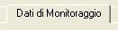
Di seguito è riportato un esempio del tab Dati di
Monitoraggio prima dell’inserimento delle informazioni. Notare nella parte
superiore del tab (evidenziata con la linea punteggiata) che i campi per data e
ora di Inizio Erogazione, Inizio Esposizione e Fine Esposizione sono provvisti di menu a tendina per l’impostazione di tali dati chiave. Il fumigatore deve inserire le stesse informazioni in questo tab e in quello successivo relativo allo Stato del Monitoraggio. Ecco le definizioni delle termini citati:
Inizio
Erogazione: momento in cui inizia/è iniziata l’erogazione del fumigante nella struttura o nella cella da sottoporre a fumigazione.
Inizio Esposizione: momento in cui inizia l’accumulo del CT (dosaggio). In genere corrisponde al raggiungimento dell’equilibrio.
Fine Esposizione : momento in cui termina l’accumulo del CT (dosaggio).
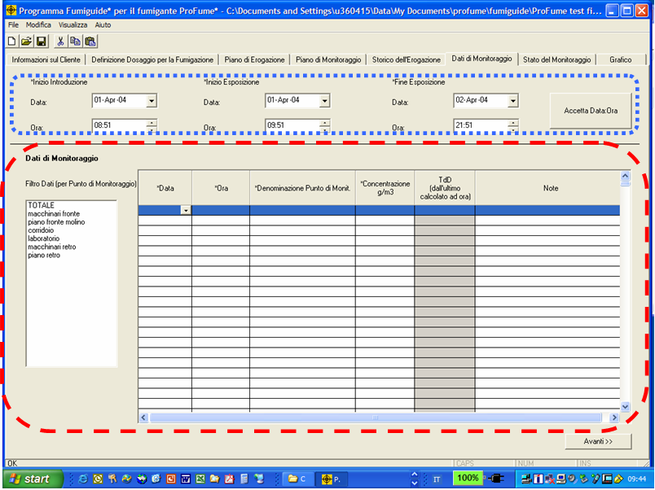
Notare adesso la sezione Dati
di Monitoraggio di questo tab (evidenziata dalla linea tratteggiata): qui
vanno inseriti i dati di monitoraggio ordinati per punto di monitoraggio e qui compare il TdD relativo al punto di monitoraggio.
L’esempio seguente della schermata Dati di Monitoraggio mostra quattro serie di dati di monitoraggio relative a sei punti di monitoraggio. Per visionare tutti i dati inseriti il fumigatore può utilizzare la barra di scorrimento verso l’alto e verso il basso. Notare che in questo esempio sono presenti dati in corrispondenza di TUTTI i punti di monitoraggio.
NOTA:
Si raccomanda di salvare i dati frequentemente, man mano che vengono inseriti.
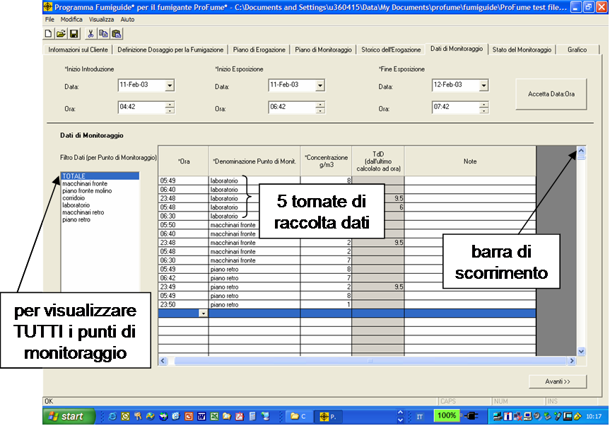
Nel caso il fumigatore voglia vedere solo i dati relativi ad un punto di monitoraggio, basta che lo selezioni dall’elenco Filtro Dati.
Nel caso il fumigatore voglia vedere solo i dati relativi ad alcuni punti di monitoraggio occorre selezionare questi ultimi dall’elenco Filtro Dati tenendo premuto il tasto "Ctrl" sulla tastiera del computer. Sulle tastiere standard dei computer i tasti "Ctrl" si trovano a sinistra e a destra della barra di spazio.
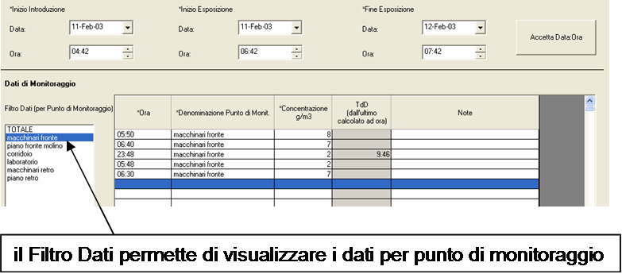
Notare nell’esempio seguente come
i punti di monitoraggio siano visualizzati primariamente in ordine alfabetico e secondariamente in ordine cronologico all’interno dei raggruppamenti per punto:
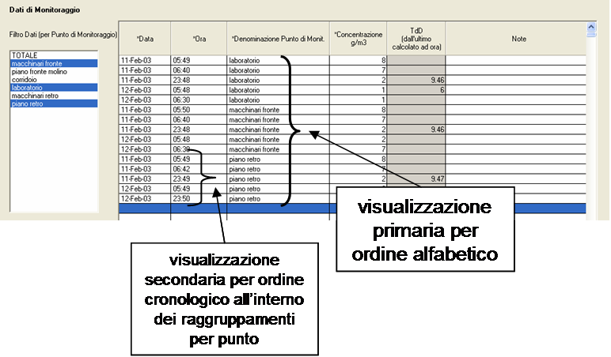
Una o più linee di monitoraggio
possono essere copiate e incollate in un’altro punto della tabella selezionando la riga desiderata (che sarà subito evidenziata in blu), cliccando sul pulsante destro del mouse per poi portarsi su Copia. Scorrete la tabella fino ad una riga vuota oppure selezionate un punto di monitoraggio dal Filtro Dati e cliccate sul pulsante destro del mouse per poi portarsi su Incolla.

E’ possibile cancellare singole
linee di monitoraggio seguendo un procedimento simile fino
a scegliere Cancella dal menu ottenuto cliccando sul pulsante destro del mouse. In alternativa si possono utilizzare le varie scorciatoie da tastiera: Copia (Ctrl + C), Incolla (Ctrl + V) e Cancella (Cancella). (Il tasto Cancella situato sopra il tasto di arretramento di uno spazio nelle tastiere standard per computer).
Un’altra comodità del tab Dati di Monitoraggio è la possibilità di inserire i dati non solo operando manualmente ma anche selezionando la data direttamente nel calendario che compare cliccando sulla freccia della colonna Data:
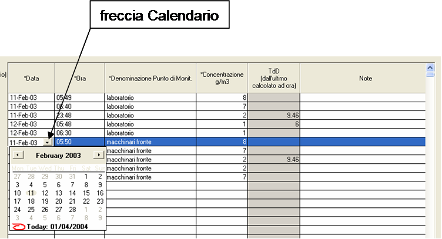
Nella colonna Ora, il momento esatto della lettura del dato di monitoraggio può essere modificato facendo un doppio click sulla relativa cella. A questo punto il fumigatore può regolare l’Ora e i Minuti in quella colonna come mostrato negli esempi seguenti. I punti di monitoraggio sono visualizzati in ordine cronologico.
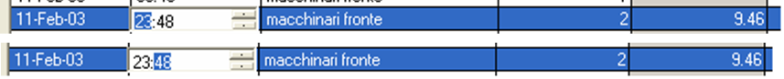
Tutti i punti di monitoraggio
precedentemente impostati nel tab Piano di Monitoraggio sono ora disponibili in un menu a tendina nel tab Dati di Monitoraggio. Nell’esempio seguente notare come il TdD non venga calcolato finché i valori della concentrazione non abbiano raggiunto il livello massimo e abbiano quindi cominciato a scendere:
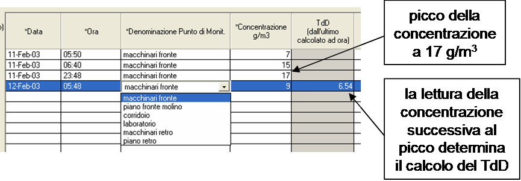
Per ogni punto di monitoraggio è possibile inserire brevi annotazioni alla colonna Note.
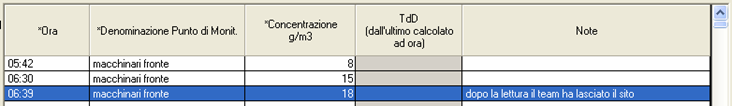
Man mano che si inseriscono
nuovi dati di monitoraggio, ProFume Fumiguide esegue e visualizza ulteriori calcoli del TdD.
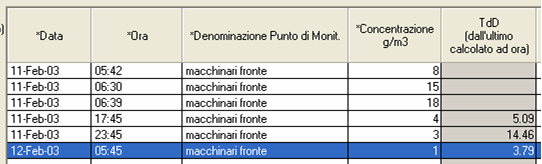
Il calcolo del TdD in corrispondenza di un dato punto di
monitoraggio viene effettuato nel momento in cui il fumigatore seleziona un altro punto di monitoraggio dall’elenco Dati Filtro o si sposta in qualunque altro tab del programma.
Messaggi di avviso associato al Tab Dati di Monitoraggio
Qualora si
clicchi su Avanti dal Tab Dati di Monitoraggio senza aver prima immesso le informazioni temporali richieste (Inizio Erogazione, Inizio Esposizione e Fine Esposizione) appare il seguente messaggio di avvertimento:
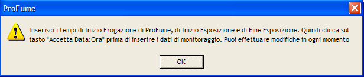
Volendo cancellare una qualsiasi riga in questo tab appare questo messaggio di avvertimento:
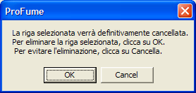
Durante l’inserimento dati nel tab Dati di Monitoraggio, il fumigatore può spostarsi tra questo tab e il tab Stato del Monitoraggio per controllare, per ogni area, lo stato della fumigazione.